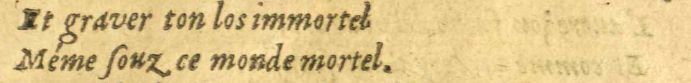
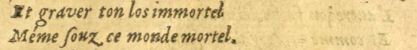
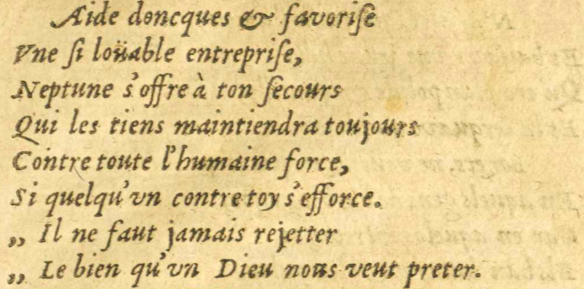
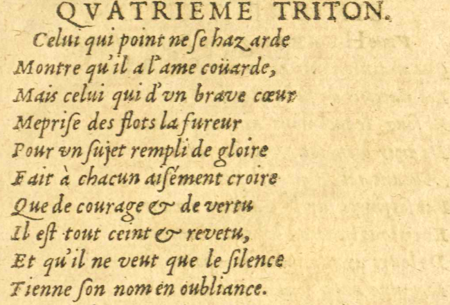
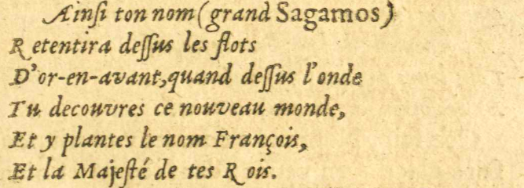
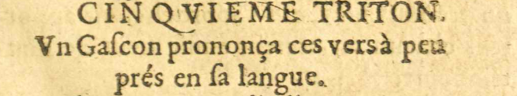
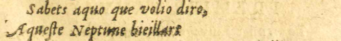

5/11
- Et graver ton los#10 immortel
- Méme ſsouz ce monde mortel.
 
- AydeE09 : Aide doncques#11 & favoriſse
- VneUne ſsi loüable entrepriſse,
- Neptune
 Dieu d'origine latine des eaux vives et des sources, puis des mers. s'offre à ton ſsecours
Dieu d'origine latine des eaux vives et des sources, puis des mers. s'offre à ton ſsecours - Qui les tiens maintiendra toujours
- Contre toute l'humaine force,
- Si quelqu'vnun contre toy s'efforce.
- Il ne faut jamais rejetter
- Le bien qu'vnun Dieu nous veut preter.
QVATRIEMEQUATRIEME TRITON.
- Celui qui point ne ſse hazarde
- Montre qu'il a l'ame coüarde,E17 E18 : .
- Mais celui qui d'vnun brave coeur
- Mépriſse des flots la fureur
- Pour vnun ſsujet rempli de gloire
- Fait à chacun aiſsément croire
- Que de courage & de vertuE17 E18 : ,
- Il eſst tout ceint & revetu,
- Et qu'il ne veut que le ſsilence
- Tienne ſson nom en oubliance.
- Ainſsi ton nom (grand Sagamos)
- Retentira deſsſsus les flots
- D'or-en-avantE11 E12 : D'or-en-vant, quand deſsſsus l'onde
- Tu découvres ce nouveau monde,
- Et y plantes le nom François,
- Et la Majeſsté de tes Rois.
CINQVIEMECINQUIEME TRITON.
VnUn Gaſscon prononça ces vers à peu
présE09 E12 : pré en ſsa langue.
- Sabets aquo que volio diro,
- Aqueſste NeptuneDieu d'origine latine des eaux vives et des sources, puis des mers. bieillart
